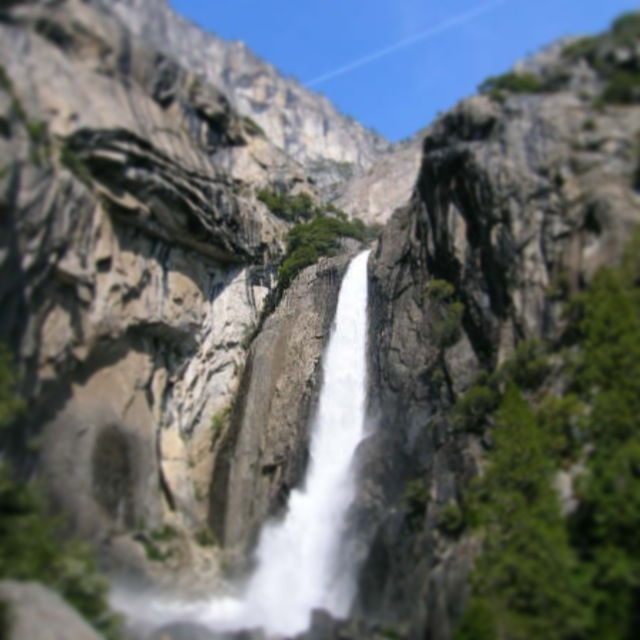
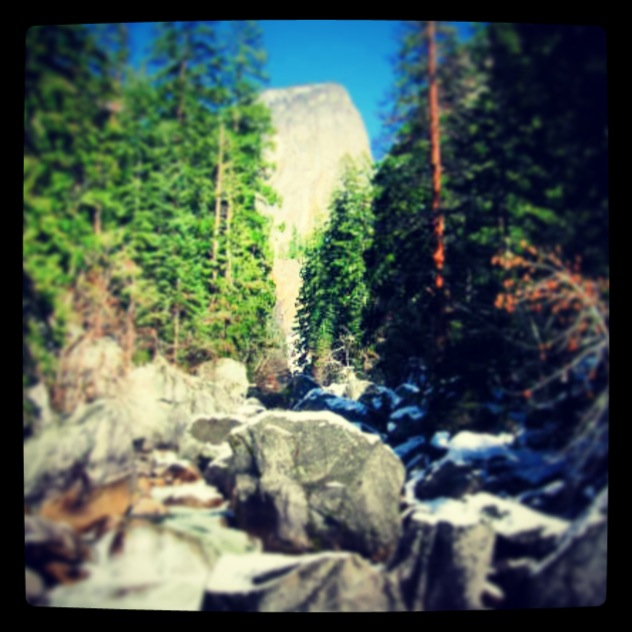
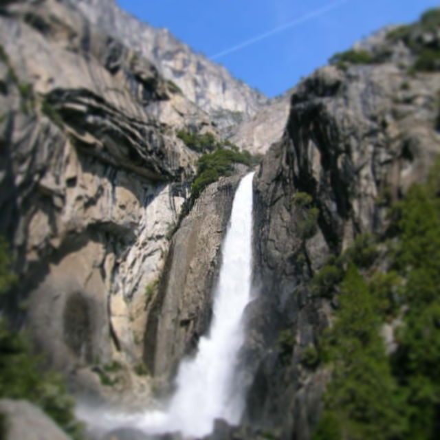
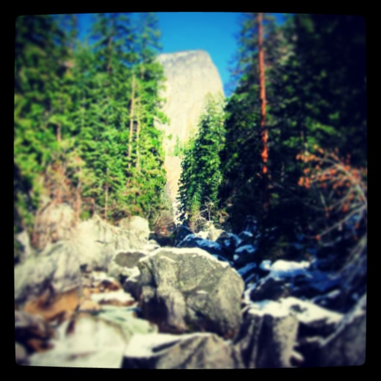

Yosemite
 



Yosemite is the ultimate getaway. These pictures try to capture the way Yosemite is vast, beautiful and in its greatest moments unnocupied by people. The grandeur of its large mountains, beautiful forrests and awe-inspiring waterfalls captures the imagination and transforms peoples' often self-centered obsession into feelings of admiration and awe.